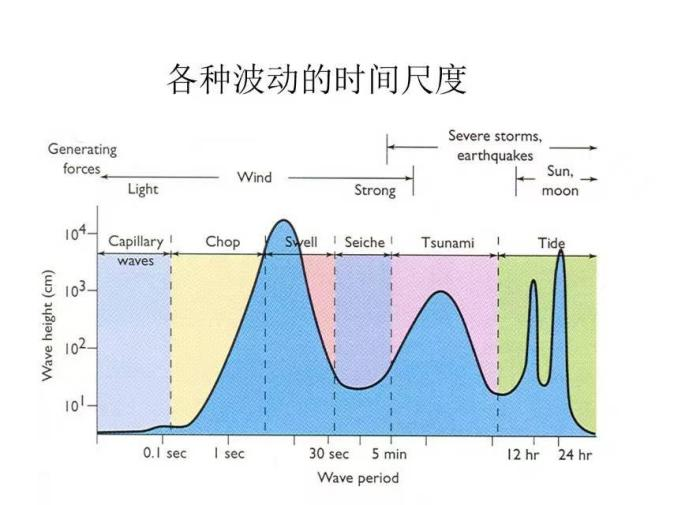
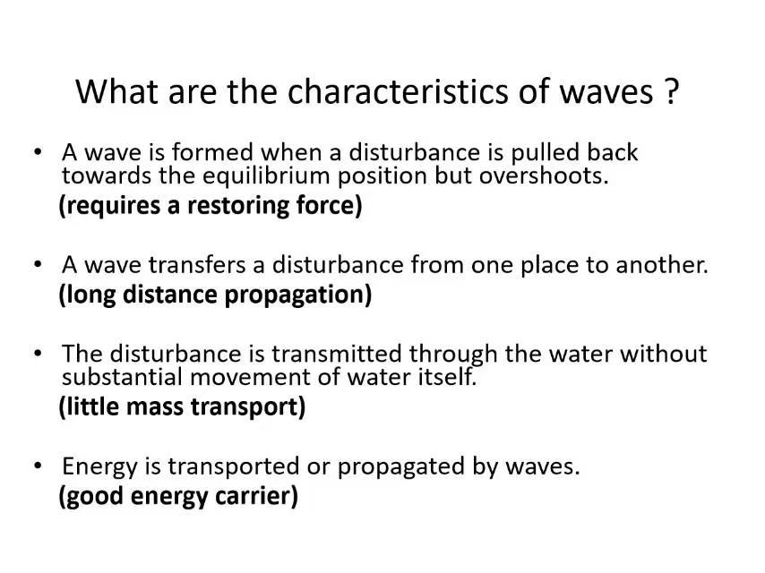

动力过程：地转、Ekman 与位涡
驱动问题：为什么海流常沿着海面等高线走，而不是直接流向低处？
课堂内容
水平压强梯度先让海水加速，科氏力随速度增大并改变方向；在大尺度、低摩擦、缓变条件下两者近似平衡，形成地转流。取 x 向东、y 向北：\(u=-(g/f)\eta _y\)，\(v=(g/f)\eta _x\)。
密度水平差异通过静力关系改变不同深度的压强梯度，给出热成风切变；密度给相对速度，绝对速度还要参考层或观测约束。
风应力在表层驱动 Ekman 输运；风应力旋度通过 Ekman 层底的垂直运动让内区水柱伸缩，联系 Sverdrup 经向输运和西边界流。位涡 \(q=(\zeta +f)/h\) 在理想单层、无摩擦、绝热条件下近似守恒。
- 科氏力永远垂直于运动方向，不做功。
- 表层 Ekman 流偏 45°，垂直积分后的净输送偏 90°。
- 西边界流（湾流、黑潮）参与闭合整体环流。

我自己的话
我原以为科氏力是一种真实的力，后来发现它只在旋转参考系里出现，而且永远垂直于运动方向、不做功；它改方向，不改速度大小。
当时的疑问 + 后来怎么想通
我当时没懂：为什么 Ekman 输送是垂直风向 90°，表层流却只偏 45°？
后来想通：45° 是表层流速；把整个 Ekman 层垂直积分，各深度偏转相互抵消，净输送才是 90°。
第6周出门票
本周记录：对照课堂材料，整理不同波动的时间尺度、波的特征，以及深水和浅水条件下的相速。


一般色散关系
\[\omega^2=gk\tanh(kh),\quad c=\frac{\omega}{k}=\sqrt{\frac gk\tanh(kh)}\]
深水
\[h>\frac{\lambda}{2},\quad c=\sqrt{\frac gk}=\sqrt{\frac{g\lambda}{2\pi}}\]
浅水
\[h<\frac{\lambda}{20},\quad c=\sqrt{gh}\]
深水波相速依赖波长；浅水波相速依赖水深。
本讲来源：Talley · 扩展动力章 S7 · University of Hawai‘i · Sverdrup balance